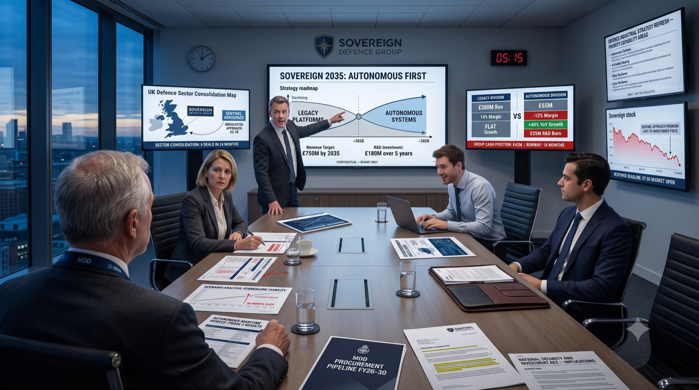

How a service leaver gets things done in a civilian workplace, where rank no longer gives the order. Evidence, not inference.
Every candidate works through the same four short workplace situations and three reasoning tests. The employer gets a profile they can read in minutes: what the candidate noticed, what they put together, the calls they made and who they went to.
No AI marks anyone. Candidates pin, join and decide; fixed rules, written in advance, score what they did.
The same choices produce the same result, whoever the candidate is.
Early access · Invitation only
Operational judgement, command decision-making and analytical rigour are compressed into job titles and dates. The substance is lost.
Two officers of identical rank can differ substantially in how they work. Rank does not distinguish them.
Mismatched hires, wasted capability, and capable people passed over because their experience doesn't read across.
A new senior hire from the forces usually has to get things done through people who don't report to them: a founder, investors, a partner, a team they have only just met. Turnstone is built around exactly that. In every situation the candidate arrives new, in a civilian workplace, with no one to give orders to. You can't order; you have to ask.
What they have done, in their own words, often in language a civilian employer can't read.
How they handle numbers, words and logic.
How they present, and what they choose to tell you.
What they actually do with a situation they didn't create, people they don't control, and news that changes the picture.
The same for every candidate, so employers compare like with like.
A payroll incident, a workshop floor, an investor review, a partner meeting. Each is one picture and a short brief, designed to take 15 to 20 minutes.
Numerical, verbal and logical, taken at any time. Shown beside the situations, never added to them.
About 80 words, shown to the employer exactly as written. Never scored.
Candidates can record their service background and what they are looking for. It is shown as context and never scored. Clearance is shown only if they choose.
Each situation has an answer key written before any candidate sat it. The rules score what the candidate pinned, joined and decided, so the same choices produce the same result every time.
Candidates study one picture of a workplace in the middle of something, and work it the way they would on their first week in a new role. What is recorded is how they reason: what they notice, which things they put together, the calls they make, and who they go to.
They show it by doing, not by writing about it. Judgement counts only when their own board backs the answer, so a lucky guess on its own earns nothing.
What matters, in the scene or the brief.
Which things belong together, and what each link helps decide.
What they would do.
Something changes. What they change in response.
Who they go to, and in what order.
What would most change their mind.
What they pinned, the pairs they joined, and the decision each link helps with. Every situation is a civilian workplace, on purpose: that is the move a service leaver makes.

1 2 3 4 5 6It's 05:15 and the response is due at the 07:00 open.
The approach is priced well above where the shares trade.
Eighteen months of runway is exactly where the cliff is.
Which decision does this link help with?
Drawn on a scene that is not one of the four situations, so it gives nothing away. The situations themselves, their questions and their keys are never shown outside the platform.
Some assessment tools now use AI to judge a candidate's answers, so the result rests on a system that cannot fully explain itself or be relied on to give the same answer twice. Turnstone takes AI out of marking altogether. Candidates show their reasoning through what they pin, join and decide, and fixed rules score it.
Scoring is code, run on the server. Identical choices yield an identical result on every run, for every candidate.
A decision earns credit only when the candidate's own board supports it. Picking the right option without the reasoning behind it earns nothing.
Every line of the profile traces back to something the candidate did. Defensible to a hiring panel, or to a candidate who asks why.
No single score, no league table, no pass mark. Employers compare two or three candidates side by side, in the order they choose, never sorted and never totalled. Turnstone is one more way to see a candidate, beside everything else they know.
Each view is built for the person using it. Every organisation sees only its own candidates.
Invites candidates, follows their progress, reads each profile with an interview guide drawn from what the candidate did, and compares two or three side by side.
Sits the situations and tests, gets a report after each room, then a full profile in language a civilian employer understands. It tells the same story the employer reads.
The hiring company. Sees only the candidates shared with them, once each profile is complete, and compares them side by side.
| Platform view | Defence prime | Defence startup or VC | Search firm |
|---|---|---|---|
| Recruiter | Internal talent acquisition | Founder or portfolio talent team | Consultant running the search |
| Candidate | Service leaver or veteran | Service leaver or veteran | Service leaver or veteran |
| Client | Hiring manager or programme lead | Portfolio company | The company they are hiring for |
And their supply chain
Evidence on ex-military candidates for senior roles that stands up to internal scrutiny, beyond the CV and the interview.
Leadership hires
See how a candidate works with people they don't control, before committing to them in a small team where that matters most.
Placing service leavers
Show clients more than a CV and a call: how your shortlist actually works, shared with them in one place.
The candidate
A report of their own, in language a civilian employer reads, about how they get things done. Honest, and never a score.
Turnstone is new, and in early access with invited users. It has not yet been validated against job performance, and we don't claim it predicts it. Validation with real candidates comes next. Use it beside interviews and references, never instead of them.
Turnstone is not a first attempt. We build systems that operate inside organisations where an unexplainable output is not acceptable, and we design for scrutiny from the outset.
UK Fire & Rescue Services
In use by UK Fire and Rescue Services. Built to the same principle as Turnstone: structured, explainable output that a public body can stand behind.
We work with organisations that operate under audit, procurement scrutiny and public accountability, and we build to those constraints rather than around them.
Every product we ship separates what a machine can help with from the decisions a machine should not make on its own. In Turnstone, that means no machine judges a candidate.
The clearest way to judge Turnstone is to sit it yourself. We can set up a demonstration login for the practice room and a situation, and walk you through example reports.
Ask for a demoOr email adam@generativeaisolutions.com
Sign in with the email your invitation came to. If you are testing Turnstone for us, the testers' guide explains each step.